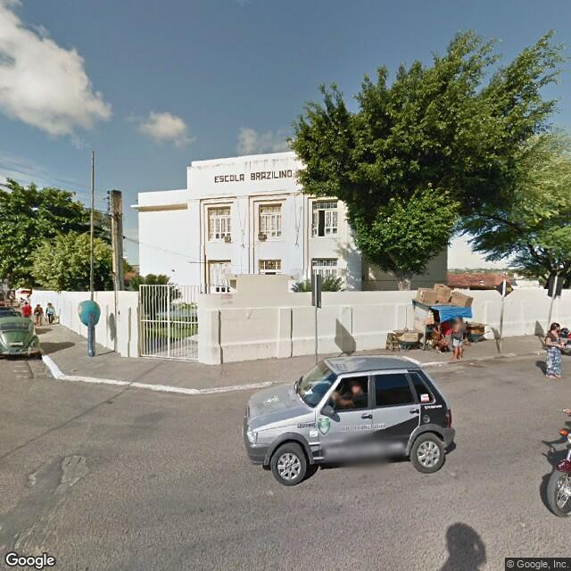
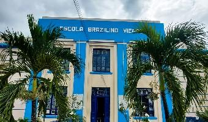
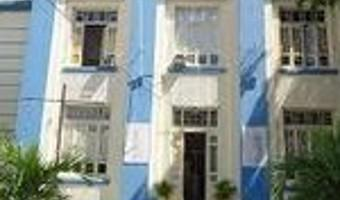
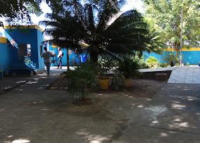
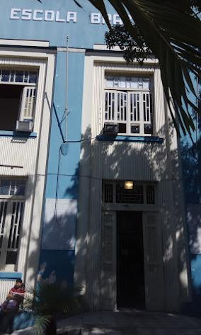
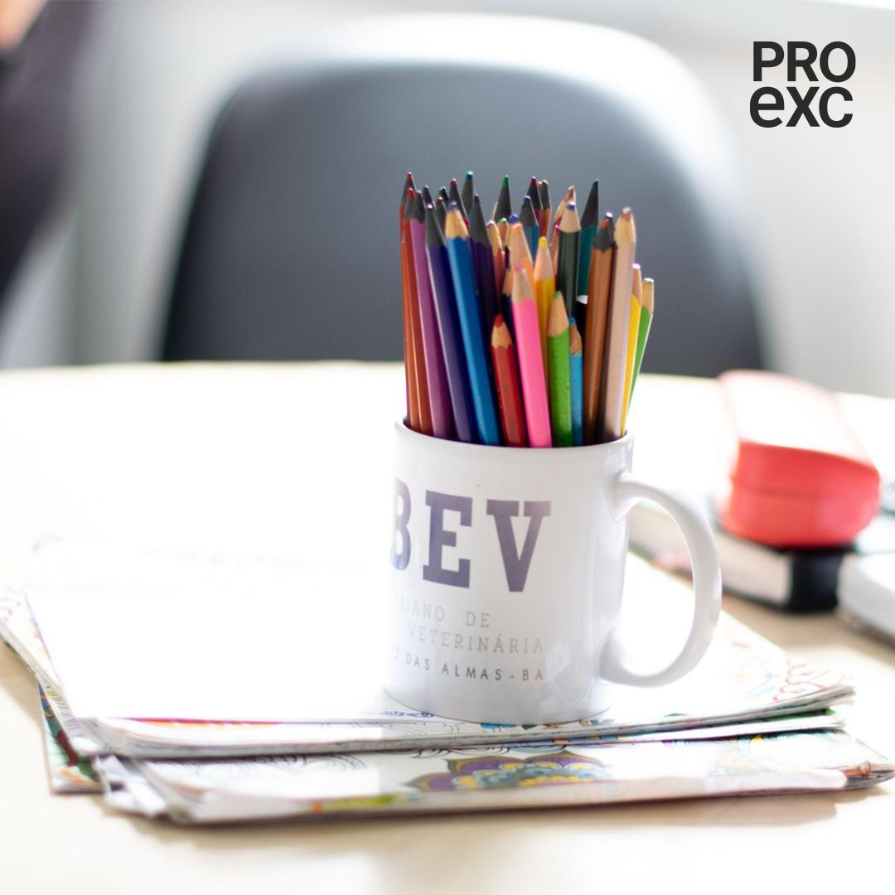
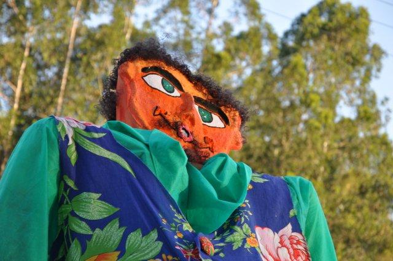
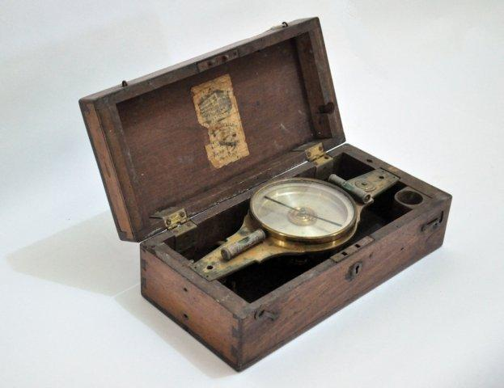
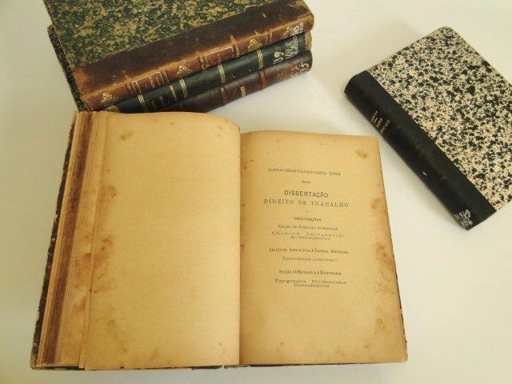

Projetos Educacionais
| Projeto | Área | Público |
|---|---|---|
| IA na Escola | Tecnologia | Professores |
| Laboratório Digital | Informática | Estudantes |
| Educação Ambiental | Sustentabilidade | Comunidade Escolar |
| Projeto | Área | Público |
|---|---|---|
| IA na Escola | Tecnologia | Professores |
| Laboratório Digital | Informática | Estudantes |
| Educação Ambiental | Sustentabilidade | Comunidade Escolar |
Conheça melhor nossa escola através das fotos:








